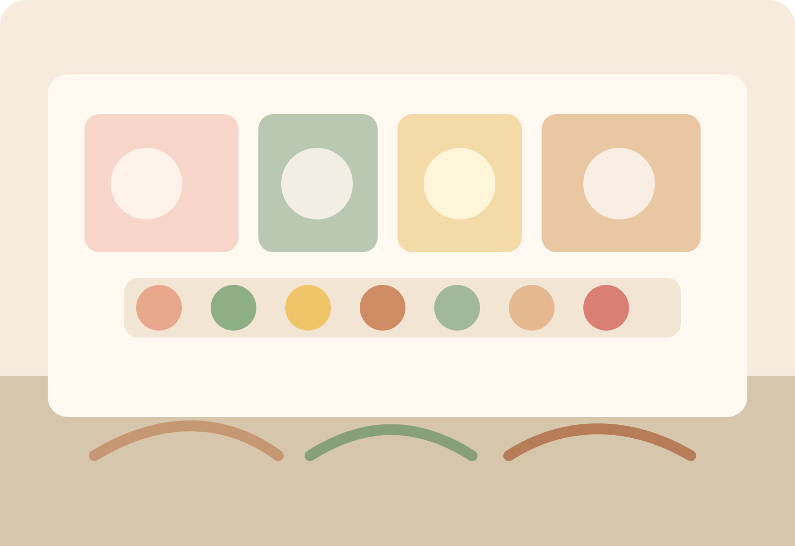

This classroom gives toddlers the structure and freedom they need to move, choose, repeat, and build early independence. Teachers guide with warmth while protecting the calm order that helps young children thrive.
Everyday rhythm
The day includes work time, snack, movement, outdoor play, small-group language, music, rest, and predictable transitions that support self-regulation.
Family experience
Children practice hand washing, food prep, cleaning, dressing, turn-taking, and early grace and courtesy, while teachers gently support growing independence and social confidence.